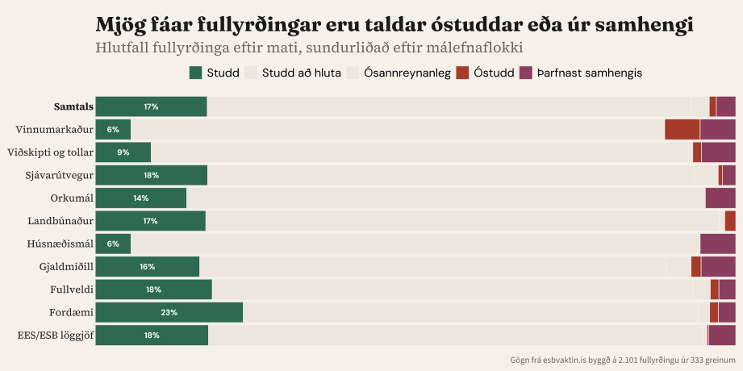
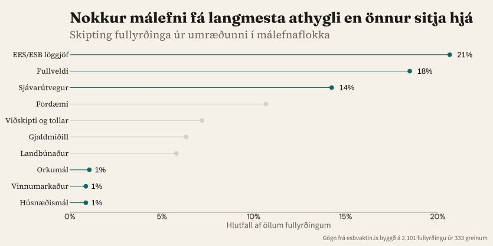

3HeimildirBornar saman við gögn og lagaákvæði499 heimildir
→
4MatFullyrðingar flokkaðar eftir gæðum●●●●●
Grein„Líklega er hlutfallið komið eitthvað nær 20% í dag en hins vegar óraveg frá 75-80%.”Stjórnmálin · 24. mars→Fullyrðing„Ísland hafi innleitt 80% af regluverki ESB”→HeimildirEEA-LEGAL-001 · EEA-DATA-017 · EEA-LEGAL-006→að hluta staðfest


EES-rétturað hluta stutt
„Ísland hefur þegar innleitt stóran hluta af löggjöf ESB í gegnum EES-samninginn.”
16 tilvísanir · #84
Sjávarútvegurað hluta stutt
„Sameiginlega sjávarútvegsstefnan fellur undir einokunarvald ESB samkvæmt 3. gr. TFEU.”
5 tilvísanir · #890
Landbúnaðurað hluta stutt
„ESB-aðild myndi leiða til opnunar íslensks markaðar á innflutningi landbúnaðarafurða.”
13 tilvísanir · #217
Fullveldiað hluta stutt
„Við ESB-aðild yrðu Íslendingar neyddir til að hlíta lögum sem samin eru erlendis.”
3 tilvísanir · #966
Hvað umræðan endurtekur
Hvers engin spyr
EES/ESB-löggjöf424 fullyrðingar
Báðar hliðar vitna í hlutföll *(70%, 14%, 80%) — nákvæmlega hlutfall af hverju?**
13.000+ lagagerðir án atkvæðisréttar. 400–500 bíða innleiðingar. Hvort tveggja sjaldan rætt.
Sjávarútvegur291 fullyrðing
14 af 20: hverju við myndum tapa. Engin: hvernig mun samningur líta út í raun og veru
Hvað verður um 800–1.000 ma.kr. í kvótaeignum — ekki meðal topp 20
Landbúnaður146 fullyrðingar
85% frá sjónarhorni framleiðenda. Bændablaðið birtir 36% umfjöllunar
Hvaða áhrif hefur þetta á neytendur? Matvælaverð kemur fyrir í 2 af 20
Fullveldi383 fullyrðingar
Viðræðum og aðild blandað saman — erum að kjósa um aðild
Afturkræfni: 0 af 25
1. Er ég forvitin — eða er ég að verja afstöðu?— Tim Harford
2. Er þetta sett fram til að upplýsa mig — eða til að sannfæra mig?— David Spiegelhalter
3. Ekki auka traust, sýnum trausverðugleika— Onora O’Neill
Hvaða spurningum getum við svarað núna? Hvaða spurningar þurfa meiri upplýsingar? Hvaða spurningum er ekki hægt að svara?